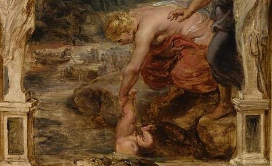
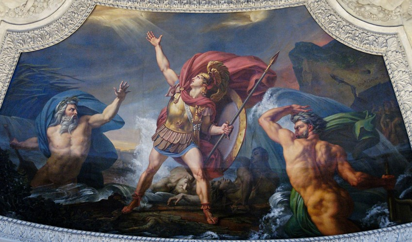
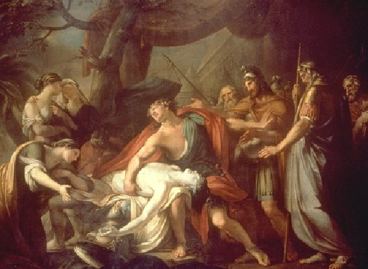
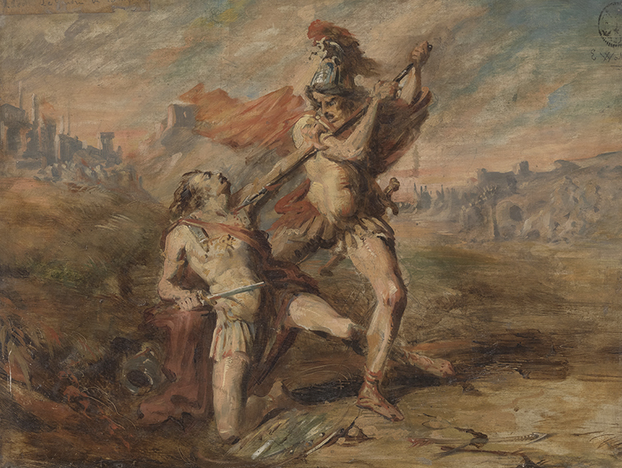
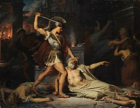
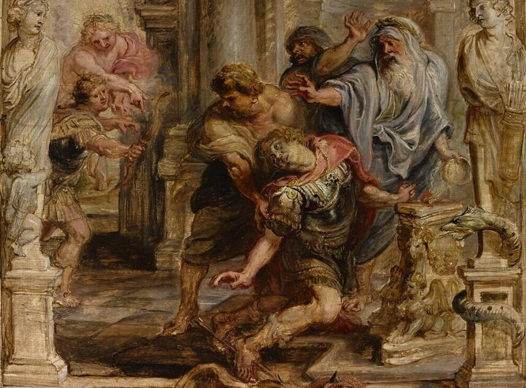

Kort na Achilles' geboorte, werd hij door zijn moeder, Thetis, ondergedompeld in de rivier de Styx om hem onkwetsbaar te maken. De magische wateren maakten zijn hele lichaam immuun voor verwondingen, behalve zijn hiel, waar Thetis hem vasthield tijdens de doop. Deze hiel zou later bekendstaan als de "Achilleshiel" en zijn enige zwakke plek worden.
Achilles wordt opgeroepen om deel te nemen aan de Trojaanse Oorlog. Zijn roem als de grootste krijger van zijn tijd had zich verspreid, en de Griekse leiders beseften dat zijn aanwezigheid cruciaal was voor hun strijd tegen Troje. Achilles stemt ermee in om zijn vaderland te dienen en zijn onverschrokkenheid op het slagveld te tonen.
Na de dood van zijn vriend en metgezel Patroklos door toedoen van de Trojaanse held Hector, wordt Achilles overweldigd door een verwoestende woede. Hij zet alles op alles om wraak te nemen op Hector en de Trojanen. Zijn vastberadenheid en onstuitbare kracht maken hem tot een angstaanjagende vijand in de oorlog.
In een episch duel met Hector, de dappere prins van Troje, toont Achilles zijn ongeëvenaarde vaardigheden op het slagveld. Hij overwint Hector en doodt hem, waarna hij triomfantelijk het lichaam achter zijn strijdwagen bindt en het vernedert voor de muren van Troje. Deze overwinning maakt Achilles tot een legendarische held en brengt diepe rouw over de Trojanen.
Na de dood van Patroklos en de wraak op Hector wordt Achilles overmand door diepe rouw en verdriet. Hij realiseert zich de waarde van vriendschap en de vergankelijkheid van het leven. Achilles treurt om zijn verlies en organiseert grootschalige afscheidsrituelen ter ere van zijn vriend, waarbij hij uitdrukking geeft aan zijn diepe emotionele pijn.
Koning Priamus van Troje smeekt Achilles om het lichaam van zijn zoon Hector terug te geven voor een waardige begrafenis. Hoewel Achilles diep gekwetst is door de dood van Patroclus, raakt hij ontroerd door de smeekbeden van Priamus en toont hij onverwachte genade. Hij staat toe dat Hector's lichaam teruggegeven wordt en geeft zo blijk van een menselijkere kant van zijn karakter.
Tijdens de Trojaanse Oorlog, tijdens het gevecht, wordt Achilles geraakt door een pijl die is afgeschoten door Paris en wordt geleid door Apollo. De pijl treft zijn enige zwakke plek, zijn hiel, en veroorzaakt zijn fatale verwonding. Achilles sterft, waarmee een einde komt aan het leven van de grote Griekse held, maar zijn roem en nalatenschap blijven voortleven in de eeuwenoude verhalen en legendes.
